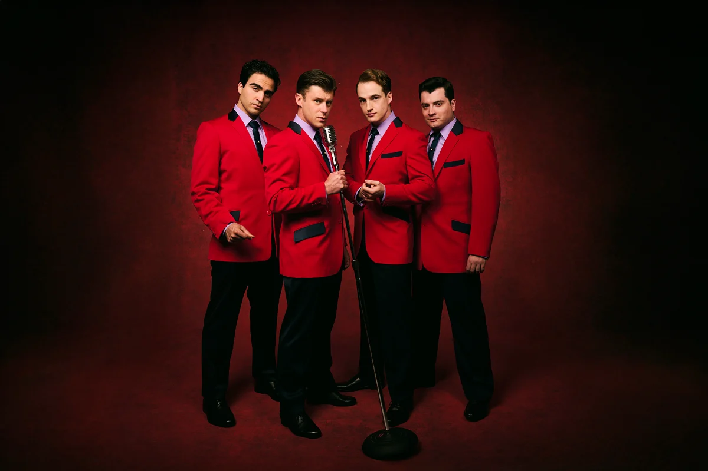

Our Family Verdict
I’m Beggin’ You Not to Miss This Show!
Currently touring the UK on its 20th Anniversary Tour, this original Tony® Award-winning musical has arrived at Birmingham's
Alexandra Theatre, bringing to the stage a sensational collection of timeless hits, phenomenal vocals and a fascinating true-life story.
They were just four guys from Jersey until they sang their very first note. They had a sound nobody had ever heard, and the radio just couldn't get enough! But while their harmonies were perfect on stage, backstage and away from the bright lights, things were very different.
I’ve never seen the show before and whilst I recognised every song, I didn’t know very much about the band.
I loved that the story isn't told from just one perspective. Each of the four key members takes their turn to narrate events, giving us their own version of their journey, the friendships, the fallouts and their extraordinary rise to fame. This makes the storytelling particularly effective, offering us a glimpse into the world behind those record-breaking songs and the people who created them.
I really enjoyed discovering the history and difficult beginnings of each individual, and just how easily their lives could have taken a very different path. A young Frankie learning his craft from different members when they weren’t spending time inside, their early experiences make for a fascinating story that so many original fans wouldn’t have known at the time.
We see the friendships that brought them together, the ambition that drove them forward and the personal sacrifices they each made along the way. On stage, they were a shiny, pitch-perfect group of gentlemen in stylish suits, looking every bit the perfect band. But, behind the scenes, tensions were rising. Crippling debts to people you really wouldn't want to get on the wrong side of, resentment and artistic disagreements all added to the rumbling undercurrent that eventually led to the band splitting up.
Away from the bright lights of television studios, we also get a glimpse of the personal sacrifices involved in life on the road. An absent husband and father who had to choose either to provide or to be present.
In today's world, we can open a social media platform and see what our favourite boyband member had for breakfast! We feel instantly connected to celebrities and their lives both on and off stage. Back then, it was a very different world, when so many fans didn't even know what their favourite performers looked like, simply listening to their songs on the wireless. It's fascinating to look back and realise just how much the world of music and celebrities has changed.
One thing that hasn’t changed is the band’s music, which is still being covered by artists today. What a legacy they created. The Four Seasons were inducted into the Rock and Roll Hall of Fame in 1990 and had sold an astonishing 175 million records worldwide before they were 30.
The vocals on stage were phenomenal, the harmonies pitch-perfect and the musicians were absolutely brilliant. Luke Baker as Frankie Valli is hugely talented and, with Frankie barely off stage, he certainly has his work cut out. His distinctive voice and astonishing falsetto are sensational, bringing both the character and the story to life. His performance throughout is a real highlight, capturing the unmistakable sound that made Frankie Valli such an iconic performer.
The other leads are equally impressive, with Toby Miles as Bob Gaudio, Lewis Kennedy as Nick Massi and Carlo Boumouglaby as Tommy DeVito. Emulating such well-known artists in a jukebox musical is no easy task, but this cast absolutely rises to the challenge. Their moves are slick and precise and the familiar harmonies are simply wonderful to have the opportunity to hear live.
I particularly loved that the band is on stage, the music is always a central part of the show and not hidden in the orchestra pit. The musical talent within this cast is phenomenal, and watching the musicians perform adds another dimension to the whole experience.
This musical is packed full of legendary hits, including Sherry, Beggin’, Big Girls Don't Cry and many more. It's part concert, part storytelling and entirely entertaining. The show brings those familiar and much-loved songs to life, reminding us why they became such timeless classics in the first place. These are songs we know, love and still sing today.
The set is relatively minimal, but this works brilliantly. It allows the story to move quickly and seamlessly between bars and backstage, homes and hotels without interrupting the pace of the production. It's a clever way of keeping the focus firmly on the characters, the music and the storytelling.
Jersey Boys is a musical that showcases iconic music, incredible harmonies, astonishing musicians and a fascinating story of friendship, fame, ambition and heartbreak. It's full of nostalgia, but it also gives you a much deeper understanding of the people behind the songs.
The legacy of Frankie Valli and The Four Seasons lives on, with their music continuing to create nostalgia for a time gone by while being discovered, covered and enjoyed by new generations around the world.
The music and vocals are just too good to be true! I'm beggin' you not to miss it!
Photo Credit: Matt Crockett
Sensory Strategies & Parent Insights
Sound Levels: The production features live concert-style sound amplification with classic 1960s pop-rock tracks. Expect sudden upbeat percussion and high-energy group numbers like Sherry and Beggin’. Note: There is a sudden gunshout/loud bang early in the show.
Lighting Shifts: Dynamic concert lighting is used throughout, including flashing stage lights and retro television studio glare.
Content Advisory: Rated for ages 11+ due to mature themes, bad language, drug use and realistic depictions of backstage tensions, financial pressure, and mob-related debt storylines.
Venue Logistics: Birmingham Alexandra Theatre offers step-free foyer access and dedicated wheelchair spaces, though booking early via their accessibility line is strongly recommended.